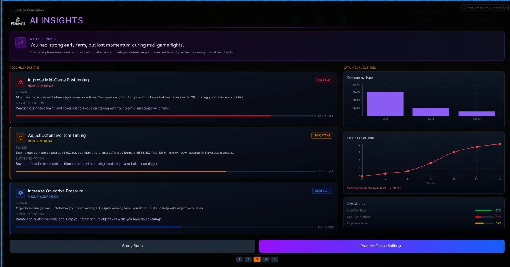

Overview
Valve's Deadlock gives players 13 different post-match analytics tabs. In our user research, the average player used three. This was surprising and really put into perspective how impactful our project could be.
Why this project
Deadlock is in closed beta, which means the way it teaches players to improve is still being written. That's a rare window. Most competitive games freeze their post-match systems before anyone questions whether those systems actually help players get better. We picked this project because we wanted to ask that question before it was too late.
My experience with these particular type of games are somewhat limited. I have played different MOBAss through the years and I do play a lot of competitive video games. One of the biggest problems I've had playing these games is the post-match analytics — where it seems like an information dump of all the different stats throughout the game. I've never been one to try to understand the stats and find actionable steps to improve, based on the sole reason that I get overwhelmed and don't want to spend the mental strain of trying to figure it out.
The project goes beyond gaming. Designing for a player staring at 13 tabs of data is the same design problem as designing for a doctor reading a patient dashboard or an analyst reading a financial report. Too much information, no hierarchy, no clear next action. We treated Deadlock as a case study in turning data into something a person can actually use.
The problem
Competitive players want to improve, but Deadlock's current post-match screen buries the signal in the noise. Even high-rank players ignore most of the analytics — which means slow learning, repeated mistakes, and players who eventually stop checking the screen at all.
The global games market is projected to hit roughly $188 billion in 2025, and tools like Mobalytics (10M+ users) and Overwolf (113M monthly active users) prove that players are already looking outside their games for analytics that actually help them improve. Deadlock currently sends those players elsewhere. A better native analytics experience would keep them engaged, support real skill growth, and differentiate the game in a crowded competitive market.
User Research
We ran semi-structured interviews over Discord with two ranked Deadlock players: Kenny (Phantom rank, 300+ hours) and Jeremy (Archon rank, 250+ hours). We chose experienced players because they've used the current analytics system long enough to have real opinions about what works and what doesn't. We also did field-study observation through Twitch streams to see how players actually behave during live matches, when interview self-reports aren't an option.
What we expected: We expected high-rank players to be power users of the analytics screen. A player with 300 hours, we thought, would dig into every available stat. The whole point of having 13 tabs is that serious players want depth, right? We were wrong.
What we found: Kenny used 2 of 13 tabs. Jeremy used 4 of 13. Both told us, in different ways, that most of the available analytics weren't worth their time. Kenny was selective and efficiency-driven. He used Lane Stats to understand how the first ten minutes of a match developed, and Damage Dealt by Type to evaluate whether his build and abilities actually produced value. Everything else, he glanced at and skipped.
"A lot of the other tabs are there, but I don't really use them much."
— Kenny, Phantom rank, 300+ hours
Jeremy's response was even clearer. When we asked him about the deeper analytics, he told us:
"I think the graph is cool but I'm tryna move on. I'm not trying to check all that."
— Jeremy, Archon rank, 250+ hours
Jeremy's response really surprised me. I thought that someone at such a high level in the game would care more and put more time into digging deeper into the stats — but we found the opposite. He could not be bothered with checking all that out. If someone like myself gave that answer I wouldn't be as surprised, because I'm not the highest level player and I don't really understand most of the stats. But coming from Jeremy — someone who is a high level player, someone who I thought would dig deep into the analytics — it changed everything. Initially our team was set on expanding the analytics for Deadlock, but this pushed us in a different direction.
The surprise
The most surprising finding wasn't that casual players ignore analytics. It was that expert players ignore them too. We had assumed expertise would mean broader engagement — a serious player using everything available to them. The opposite was true. Expertise made players more selective, not less. They knew exactly which two or three stats answered the question "why did this match go the way it went," and they ignored the rest.
That reframed our entire design direction. The problem wasn't that Deadlock had too few analytics. It was that Deadlock had too many, none of them prioritized, and no path from "here's a stat" to "here's what to do about it."
We also had a hard time finding players who weren't a high rank — mainly because the game is in closed beta, meaning most of the players are people who are more experienced with these types of games. That limitation shaped the scope of our findings.
How research shaped the design
Three findings drove our design decisions directly:
Players already trust certain analytics
Kenny named Lane Stats and Damage by Type as the two he actually uses. Rather than asking him to learn a new system, we built those exact analytics into our AI Insights screen as supporting evidence for the recommendations. Familiar data, new framing.
Players want curation, not more data
Both participants used a small subset of available stats. Our AI Insights screen ranks recommendations as Critical, Important, or Moderate — surfacing three prioritized items instead of dumping 13 equal-weight tabs. Fewer choices, clearer hierarchy.
Players want a next action
Jeremy specifically wanted post-match data that connected to something he could do differently. Our flow ends on a Recommended Training screen that turns the AI's insights into short, personalized drills — closing the loop between "here's what went wrong" and "here's what to practice."
The prototype
The AI Insights screen surfaces three prioritized recommendations — Critical, Important, and Moderate — replacing 13 equal-weight tabs with a clear hierarchy and a direct path to action.
